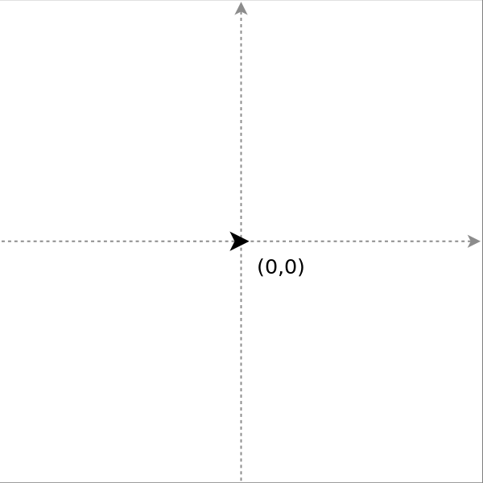
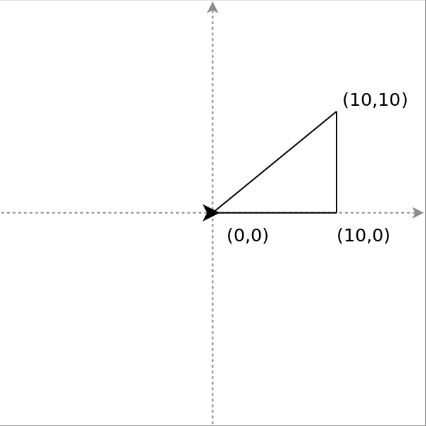
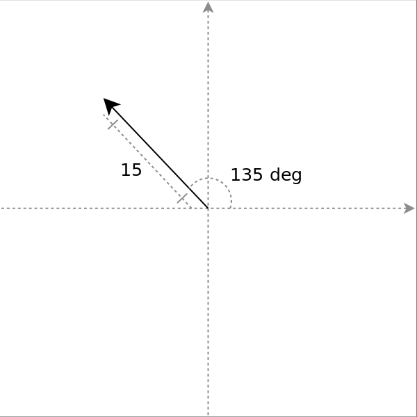
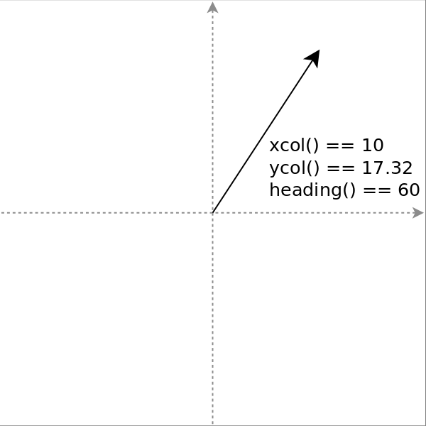
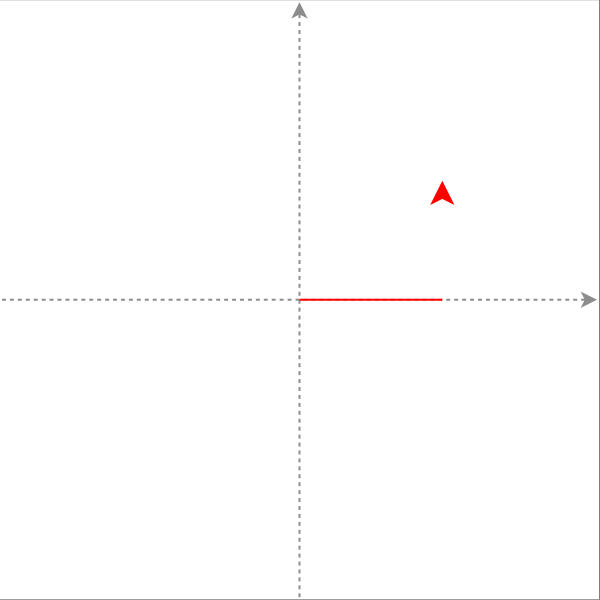
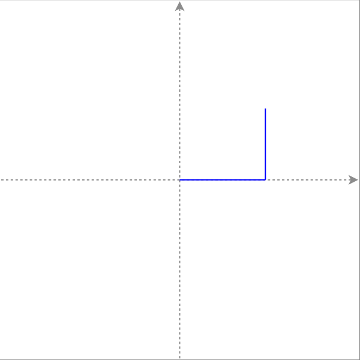
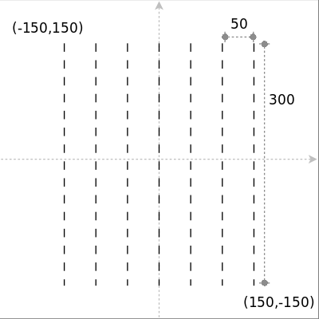
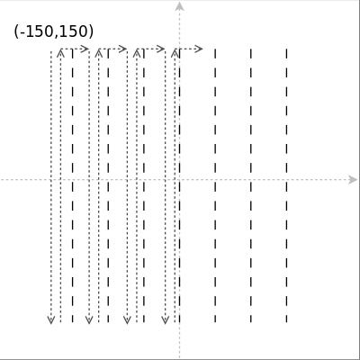
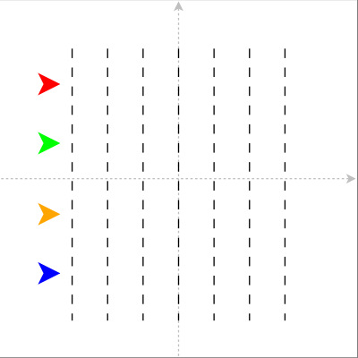
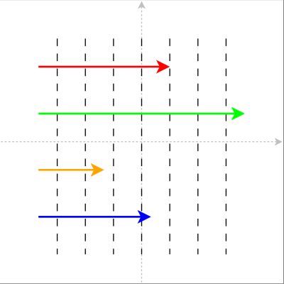

Coding With Python

Session 5: Turtle Graphics
Workbooks
Workbook 5: Turtle Graphics
From Last Session
- A list can be used to hold multiple values
- The values in a list are called elements, and can be accessed using it's index.
- The list length can be read using
len(). - The
forloop can be used to loop through elements of a list. - The
breakstatement can be used to exit any loop.
Goals For This Session
- Learn about turtle graphics
- Learn how we can use turtle graphics in Python
- Learn about using
range()withfor - Learn a bit about objects and methods
We'll use this to simulate a turtle race.
Turtle Race
Step 1: Turtle Graphics
Drawing Using Turtle Graphics
About Turtle Graphics
Imagine a turtle moving on a piece of paper. This turtle has:
- A Location
- A Orientation
- A Pen
As the turtle moves, the pen will draw a line on the paper.
This is called turtle graphics.

Moving The Turtle
Move based on the turtle's direction:
forward(d): Move forward by dback(d): Move backwards by d
Move to a particular point:
goto(x,y): Move the turtle to (x, y)home(): Move the turtle home.

forward(10); goto(10,10); home()
Rotating The Turtle
left(deg): Rotate the turtle deg degrees to the leftright(deg): Rotate the turtle deg degrees to the right
0° = east, 90° = north, 180° = west, etc.

left(135); forward(15)
Knowing Where The Turtle Is
xcor(): X coordinate of the turtleycor(): Y coordinate of the turtleheading(): Direction the turtle is facing

left(60); forward(20)
Changing The Pen
pendown(): Start drawing a linepenup(): Stop drawing a linepencolor(color): Set the pen colour
Colours can be red, lightyellow, darkgreen, etc.

pencolor("red"); forward(10); left(90); penup(); forward(10);
Changing The Turtle
showturtle(): Show the turtlehideturtle(): Hide the turtlespeed(speed): Adjust the turtle movement speedshape(shape): Change the turtle to shape
Speed goes from 1 to 10.
Shape can be "turtle" or "arrow"

pencolor("blue"); forward(10); left(90);hideturtle();forward(10)
Summary
forward(d)back(d)left(deg)right(deg)goto(x,y)home()xcor()ycor()
pendown()penup()pencolor(color)showturtle()hideturtle()speed(speed)shape(shape)heading()
Exercise 1
Use turtle graphics to draw the following shapes:
- A red square
- A green 2 x 1 rectangle
- A orange triangle (120 degrees)
Most of these you can do by using forward(), left() (or right()) and color().
Step 2: Drawing The Pitch
The for loop again
Turtle Race
The first part of the turtle race is drawing the playing field:

The Pitch
The pitch can be drawn by following the dotted path.

This can be done using a for loop.
The Range Function
To loop a bit of code a set number of times, we can use the range() function
with a for loop:
# Print the numbers from 1 to 10 for i in range(10): print(i + 1)
range(x) will effectively create a list from 0 up to, but not including, x.
range(5) # Effectively [0, 1, 2, 3, 4] range(8) # Effectively [0, 1, 2, ..., 7, 8]
The Pitch
That will give us the 7 lines:
How do we make them dotted?
Nested Loops
We can use another for loop within our first for loop:
for line in range(6): for j in range(10): pendown() forward(10) penup() forward(10) # ...
- The inner loop will draw a line of 200 points with dashes every 10 points.
- The outer loop will run the inner loop 5 times.
- These are called nested loops.
Exercise 2
Use turtle graphics to draw the playing field.
Once the field is drawn, move the turtle home and hide it. The field can be drawn using 2 loops.
Turtle Functions
forward(d)back(d)left(deg)right(deg)goto(x,y)home()xcor()ycor()
pendown()penup()pencolor(color)showturtle()hideturtle()speed(speed)shape(shape)heading()
Step 3: Multiple Turtles
More About Methods
More Than One Turtle
Multiple turtles can appear on the paper at one time.

To do that, we to use a special form of value.
Objects
- Special form of value use to model things in real life.
- Each object belongs to a particular type
- Have two special characteristics:
- Attributes: what characteristic does the object have?
- Methods: what can the object do?
- We've seen one objects so far... the list.
- The list's length is an attribute (i.e. characteristic) of the list
list.append()is a method: it adds something to the list
Methods
Methods are like functions but explicitly operate on a particular objects:
message.append("hello") # Add "hello" to the list stored # in "message" spike.forward(20) # Mote the turtle stored in "spike" # forward 20 points.
- The object is on the left of the
.and the method is on the right. - Usual way to do something to an object.
input("What's your name?") # Function turtle.color("red") # Method
The Turtle Object
-
To create a new turtle, we call the
Turtle()"function":turtle = Turtle()
-
This returns an object of type
Turtle - We can use methods to operate on the turtle
turtle.forward(50)

Turtle Methods
Same as turtle functions:
turtle.forward(d)turtle.back(d)turtle.left(deg)turtle.right(deg)turtle.goto(x,y)turtle.home()turtle.xcor()turtle.ycor()
turtle.pendown()turtle.penup()turtle.pencolor(color)turtle.showturtle()turtle.hideturtle()turtle.speed(speed)turtle.shape(shape)turtle.heading()
Exercise 3
Create 4 turtles using Turtle(). Use the following methods to setup the turtles as follows:
| Turtle | goto() |
pencolor() |
shape() |
|---|---|---|---|
| t1 | -170, 120 | red | turtle |
| t2 | -170, 40 | green | turtle |
| t3 | -170, -40 | orange | turtle |
| t4 | -170, -120 | blue | turtle |
Store the turtles in a list called turtles.
Step 4: The Race
Racing The Turtles
The Race
- The race will consist of a number of rounds.
- In each round, each of the 4 turtles will move forward a random number of points (between 1 and 10).

This will continue until one turtle has cross the finish line at 150.
Exercise 4
For each turtle in turtles, move each one by a random distance between 1 and 10:
for turtle in turtles: distance = randrange(10) + 1 turtle.forward(distance)
Continue this until a the X position of the turtle is beyond the finish line at 150.
Hint: you will need to use turtle.xcor() to know the turtle's X position, a variable
to track when one of the turtles is over the finish line, and one more loop.
Summary
- Turtle graphics are a way to draw pictures in Python
- The for loop can be used with
range()to loop a certain number of times - Objects are values that have attributes and methods